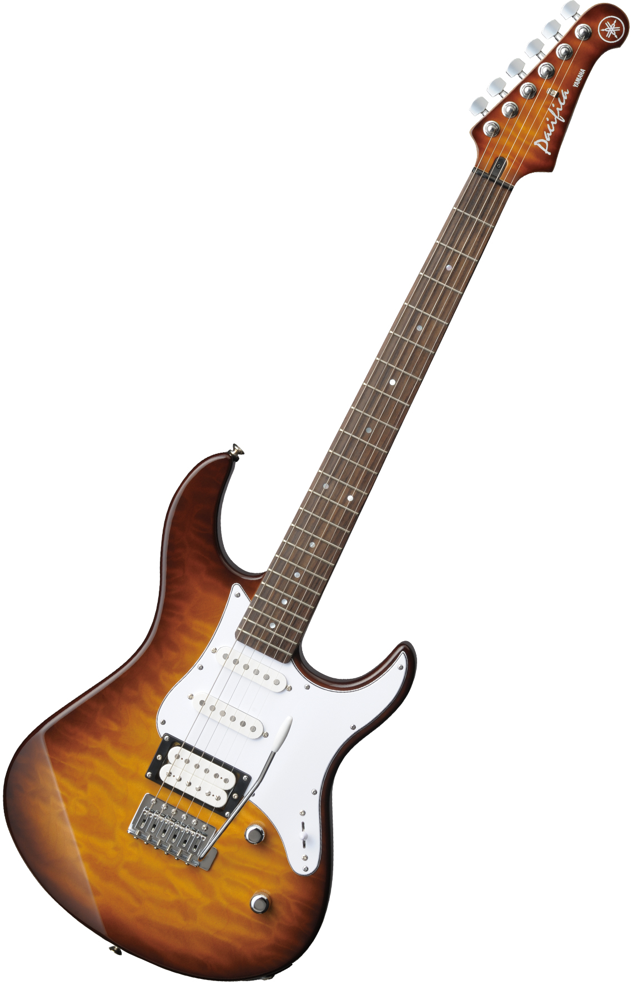

An electric guitar is a guitar that requires external amplification in order to be heard at typical performance volumes, unlike a standard acoustic guitar. It uses one or more pickups to convert the vibration of its strings into electrical signals, which ultimately are reproduced as sound by loudspeakers
The violin, sometimes known as a fiddle, is a wooden chordophone (string instrument) in the violin family. Most violins have a hollow wooden body. It is the smallest and thus highest-pitched instrument (soprano) in the family in regular use.

The piano is an acoustic, keyboard and stringed musical instrument invented in Italy by Bartolomeo Cristofori around the year 1700 (the exact year is uncertain), in which the strings are struck by wooden hammers that are coated with a softer material (modern hammers are covered with dense wool felt; some early pianos used leather).
The bass guitar, electric bass or simply bass, is the lowest-pitched member of the guitar family. It is a plucked string instrument similar in appearance and construction to an electric or an acoustic guitar, but with a longer neck and scale length, and typically four to six strings or courses. Since the mid-1950s, the bass guitar has largely replaced the double bass in popular music.

The drum is a member of the percussion group of musical instruments. In the Hornbostel-Sachs classification system, it is a membranophone.[1] Drums consist of at least one membrane, called a drumhead or drum skin, that is stretched over a shell and struck, either directly with the player's hands, or with a percussion mallet, to produce sound.